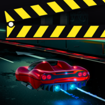

CineRush Support
Cinematic arcade racing for iPhone and iPad, by Portal Interactive, Inc.
Contact
Questions, problems or feedback? Email support@projectportal.gg. Please include your device model, iOS version and what happened. We usually reply within a few business days.
Common questions
Do I need an account or an internet connection? No. CineRush has no accounts and plays offline.
How do I change the controls? Pause a race, open Settings > Controls, and choose LEFT/RIGHT buttons or slide steering, and a GAS pedal or auto throttle.
Can I use a game controller? Yes. Connect a compatible controller in your device's Bluetooth settings before starting the game.
How do I change the music volume? Open Settings and adjust the music volume.
Privacy
CineRush does not collect personal data. Read the privacy policy.